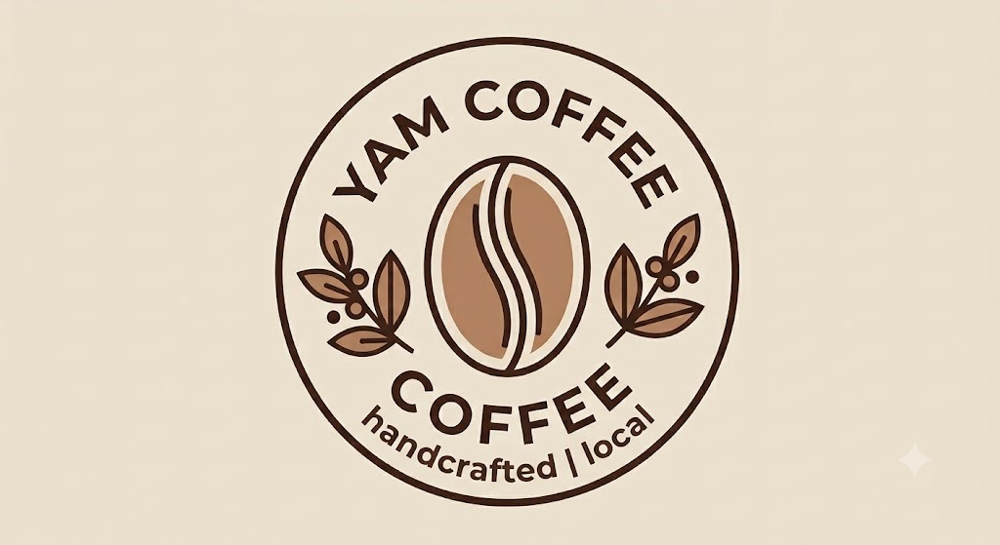

We fuse Malaysian coffee flavors with Western brewing craft, using premium beans for unique blended coffee, paired with a cozy study space.
Yam Coffee draws its core identity from the Cantonese word "Yam ", which directly translates to "to drink". This simple, warm word encapsulates our core belief: drinking coffee is not just a daily routine, but a moment of joy, rest and human connection.
Founded in central Malaysia, our caffee was created to fix a clear gap in the local market. Most imported coffee shops only focus on Western caffee aesthetics and ignore Malaysian local flavours, while traditional hawker coffee stalls lack comfortable seating, quiet atmosphere and reliable Wi-Fi for long stays.
We decided to combine the two worlds seamlessly — preserving beloved Malaysian local culture while designing a modern, minimalist caffee aesthetic that feels calm and welcoming for all visitors. Our menu covers carefully handcrafted coffee beverages, premium fruit drinks, homemade desserts and light local snacks. Every corner of our venue supports studying, remote working, friend meetups or quiet solo relaxation.
Rooted in Southeast Asian coffee culture, Yam Coffee pursues sustainable, fair-trade coffee raw materials. We take handmade craftsmanship as the core, combine local Malaysian flavors with international coffee art, and build a warm community space for every coffee lover. We hope to use a cup of coffee as a bridge to convey tenderness and cultural heritage to all guests.
To provide high-quality handcrafted coffee while creating a warm and relaxing environment for everyone. We prioritise balanced, rich coffee flavours sourced from ethical suppliers.
To become one of the most memorable local coffee brands that connects people through coffee and community. We hope to expand our influence across Malaysia.

Handmade passion in every single cup
Every pouring, stirring and decorating step is done with years of professional experience.
Our baristas combine Southeast Asian flavour habits with international coffee-making standards.
At Yam Coffee, we firmly believe every single cup of coffee carries unique warmth and local cultural identity. Coffee is never just a drink — it is a bridge that links different people, backgrounds and life stories together.
We source all our coffee beans from ethical, sustainable plantations across Southeast Asia, prioritising farmers who receive fair wages and use eco-friendly growing methods. Every beverage is crafted manually by trained baristas, who adjust brewing techniques to highlight each bean's unique aroma and taste.
Our biggest creative focus is balancing authentic Malaysian local flavours with classic Western coffee art. We blend local ingredients such as palm sugar, pandan and coconut into our signature drinks, creating flavours that cannot be found at international chain caffees. Sustainability sits at the heart of this philosophy: we avoid single-use plastics, reuse coffee grounds as plant fertiliser and actively promote eco-conscious habits to all our customers.
Every member of the Yam Coffee team shares the same passion for coffee and Malaysian local culture. Our crew consists of professional certified baristas, caffee management staff, dessert chefs and customer service attendants, each with unique skills that support our daily operation and brand mission.
Our head barista has over 7 years of specialty coffee experience, specialising in local flavour fusion drinks. Our caffee manager is focused on creating a comfortable, balanced environment for every guest, while our dessert chef designs sweet treats that pair perfectly with our coffee selections. All team members receive regular training on hospitality, sustainable practices and local cultural knowledge to ensure consistent, warm service for every visitor who walks through our doors. We treat every customer as part of our growing caffee community.
Our target audience includes university students, office workers, remote freelancers, dedicated coffee lovers, digital nomads and visiting tourists. We designed every detail of our caffee to match all their core needs: quick quality coffee orders, quiet comfortable seating zones, stable free high-speed WiFi, casual spaces for group meetups and a calm atmosphere for relaxation after busy days. Below are our core strengths that separate Yam Coffee from other local caffees:
Unlike commercial chain caffees, we never rush our guests to leave after finishing their drinks. Our seating areas are split into quiet solo booths and large group tables, catering to both lone workers and friend gatherings. We regularly update our seasonal menu with limited local-inspired drinks, and host free community events to connect our customers together.
Ready to experience Yam Coffee's unique local coffee culture?